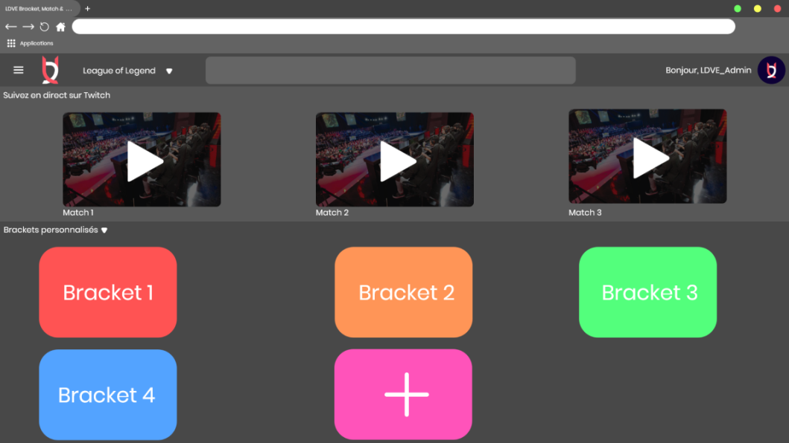

Deskcode
Membres :
Yann Decelle
Kevin Ho
Simon Roche
Cameron Lormont
Théodore Cadet
Adrien Gruel
Démo du site

Présentation
LDV Brackets (Nom provisoire) est une plateforme de création et de monotoring des matchs et classements réalisé par l'association LDV Esport au Pôle Léonard de Vinci.
Ce site permettra plusieurs choses :
- Créer des bracket personalisable avec une interface intuitive
- Créer des classements avec une interface similaire
- Une connection utilisateur qui a la capacité de suivre les brackets et les retransmissions des matchs
- Une connection administrateur qui à la capacité de gérer les brackets et classements et de les modifier
- Une fonction pour les membres standards leurs permettant de profiter du système de création de brackets pour concevoir leurs brackets privé (ou mis en public dans une liste spécialisée) et concurencer les différente plateforme de création de brackets.